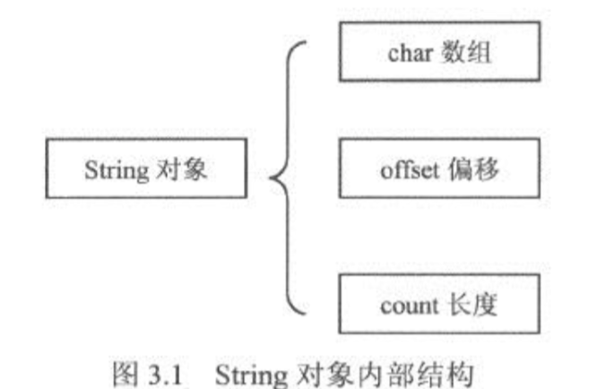

String对象及其特点
2016-03-21 23:10:04
String对象是Java语言中重要的数据类型，但它并不是Java的基本数据类型。String对象可以认为是char数组的延伸和进一步封装。
它主要由3部分组成；char数组、偏移量和String的长度。char数组表示String的内容，它是String对象所表示字符串的超集。String的真实内容还需要由偏移量和长度在这个char数组中进行定位和截取。
不变性
不变性是指String对象一旦生成，则不能再对它进行改变。String的这个特性可以泛化成不变(immutable)模式，即一个对象的状态在对象被创建之后就不再发生变化。不变模式的主要作用在于当一个对象需要被多线程共享，并且访问频繁时，可以省略同步和锁等待的时间，从而大幅提高系统性能。不 变模式是一个可以提高多线程程序的性能、降低多线程程序复杂度的设计模式。
针对常量池的优化
针对常量池的优化指：当两个String对象拥有相同的值时，它们只引用常量池中的同一个拷贝。当同一个字符串反复出现时，这个技术可以大幅度节省内存空间。
String str1 = "abc";
String str2 = "abc";
String str3 = new String("abc");
str1 == str2; //true
str1 == str3; //false
str1 == str3.intern(); //true,intern方法返回了String对象在常量池中的引用
类的final定义
作为final类的String对象在系统中不可能有任何子类，这是对系统安全性的保护。同时，对于JDK1.5之前的环境中，使用final定义，有助于帮助虚拟机寻找机会，内联所有的final方法，从而提高系统效率。但这种优化方法在JDK1.5以后，效果并不明显。